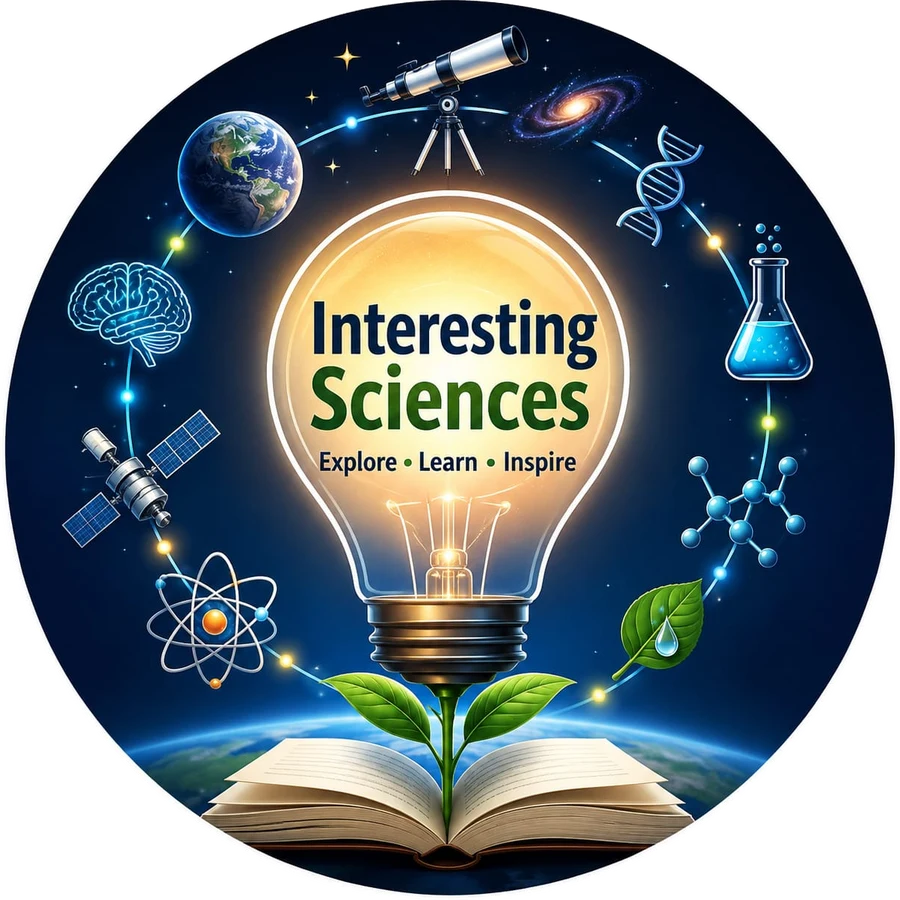

WHY Science?
A question-led series explaining the science behind everyday phenomena.

Interesting Sciences turns complex ideas into clear, engaging and trustworthy stories, for students, families and curious minds everywhere.
Why is the sky blue?
Science is not only a subject to study. It is a way to understand life, question assumptions and imagine better futures.
Interesting Sciences connects scientific knowledge with everyday life, online and in communities.
A public-facing platform. It is not a substitute for scientific institutions, journals or professional advice.
Translate discoveries, concepts and evidence into clear, engaging stories.
Use visuals, explainers, quizzes, timelines and real-world examples.
Invite people to ask questions, explore and share what they learn.
Six objectives shape everything we publish and every event we run.
Encourage evidence, reason, healthy scepticism and open-mindedness.
Explain how science works, from a simple question to reliable evidence.
Link research to health, climate, technology, agriculture and daily life.
Help students, educators and families see themselves as explorers.
Highlight Indian researchers, institutions, innovations and missions.
Share credible, sourced information and counter misinformation responsibly.
Six recurring series give readers a reason to come back.
A question-led series explaining the science behind everyday phenomena.
Quick, visual explainers designed for mobile-first audiences.
Stories of landmark ideas, people and turning points.
Missions, astronomy, planetary science and cosmic questions.
Climate, clean energy, biodiversity, water and circularity.
Student projects, grassroots ingenuity, STEM pathways and role models.
Every article, video and activity follows the same five steps.
Our editorial promise: accessible language, scientific accuracy, inclusive storytelling and source transparency.
Science works best when people can see it, try it and talk about it together.
These standards apply to everything we publish.
We use primary papers, official agencies, recognised scientific bodies and expert review.
We cite sources, dates and links, and correct errors openly and promptly.
We avoid exaggerated claims, misleading visuals and false certainty.
Mobile-first, readable contrast, alt text, captions and plain language.
We represent diverse scientists, regions, languages and lived experiences.
We moderate respectfully and separate educational content from professional advice.
Follow along for timely science, WHY threads and short videos. Teachers, researchers, media and institutions are welcome to collaborate.